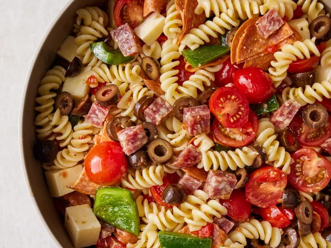

Pasta Salad

Awesome Pasta Salad
This pasta salad with pepperoni, tomatoes, and provolone cheese is the best I've ever eaten, and people request it frequently. It's a very easy, light-tasting side dish for a picnic or dinner.
Ingredients
- 1 (16 ounce) package fusilli (spiral) pasta
- 3 cups cherry tomatoes, halved
- ½ pound provolone cheese, cubed
- 1 large green bell pepper, cut into 1 inch pieces
Steps
- Gather all ingredients.
- Bring a large pot of lightly salted water to a boil. Cook fusilli pasta in the boiling water, stirring occasionally, until tender yet firm to the bite, about 12 minutes. Drain.
- Combine pasta with tomatoes, cheese, salami, pepperoni, green pepper, olives, and pimentos in a large bowl. Pour in salad dressing; toss to coat.
- Enjoy!